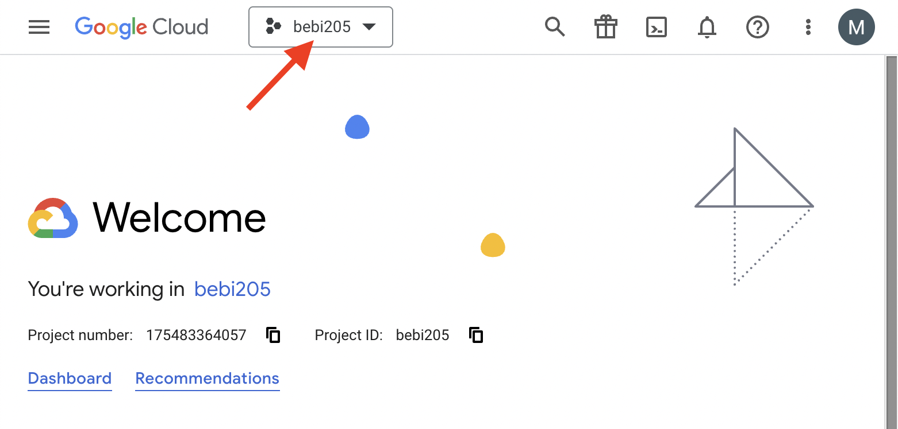
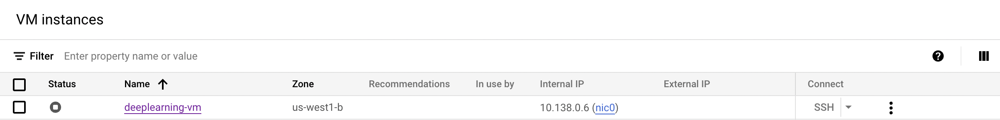
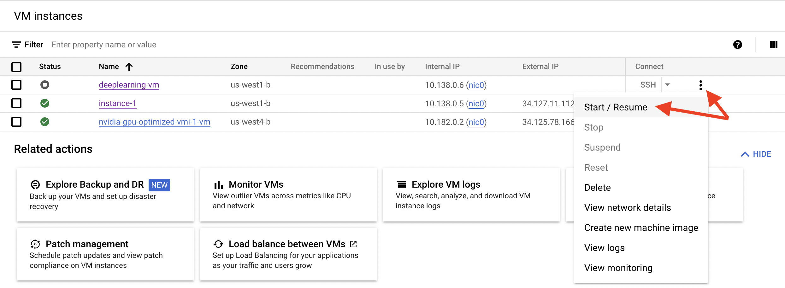
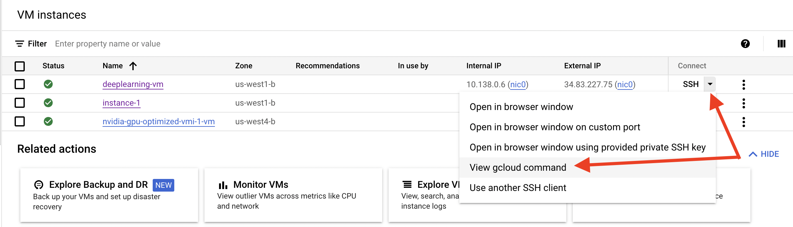

Compute Resources#
We are going to use Google Cloud VMs for this course. There are a few different ways to interact with your VM, but we recommend that you use the gcloud CLI. You can find instructions for installing it here.
Danger
You are responsible for starting and stopping your instance. We are charged any time your instance is running.
Connecting for the first time#
Go to https://console.cloud.google.com/compute/instances?project=bebi205
Confirm that the project shown in the top left corner is “bebi205” 
Find the instance with your name. It should currently show the “stopped” status. 
Tip
Each time you use your VM, you will need to first restart it. At the end of the session you need to stop it in order to avoid incurring charges when the VM is not actively in use.
Click on the three dots on the far right and then restart your instance. 
Tip
Note the stop option, which you should use to stop your instance when you are no longer using it.
From the SSH drop down menu, look up the gcloud command for connecting to your instance  It should give you a command like this:
gcloud compute ssh --zone "us-west1-b" "deeplearning-vm" --project "bebi205"
From your local terminal, run the
gcloudcommand that you copied. This command will establish an ssh connection to your VM.
Setting up your compute environment#
We are going to use mamba as our package manager for the class. It is based on conda, but is much faster!
Run the following commands to download and install
mamba. Follow the installation prompts.
wget https://github.com/conda-forge/miniforge/releases/latest/download/Mambaforge-Linux-x86_64.sh
bash Mambaforge-Linux-x86_64.sh
Prompt |
Answer |
|---|---|
In order to continue the installation process, please review the license agreement. Please, press ENTER to continue |
ENTER, continue hitting ENTER until you exit the license document |
Do you accept the license terms? |
yes |
Mambaforge will now be installed into this location: /home/$USER/mambaforge |
ENTER |
Do you wish the installer to initialize Mambaforge by running conda init? |
no |
Initialize
mamba
mambaforge/bin/mamba init
Exit your current ssh session and reconnect.
Create a new environment for running course notebooks. Installing
pytorchmay take a few minutes.
mamba create --name bebi205 python=3.10
mamba activate bebi205
mamba install jupyterlab pytorch pytorch-cuda=11.7 -c pytorch -c nvidia
Starting a jupyter lab session#
Start a screen session so that jupyter lab can run in the background
screen -S jupyter
Activate the bebi205 environment
mamba activate bebi205
Start a jupyter lab session
jupyter lab --no-browser
Exit the screen session by pressing
Ctrl-a dRetrieve the token for the jupyter server, but you can also look for it in the logs when you initially run
jupyter lab --no-browser
(bebi205) user@instance:~$ jupyter server list
[JupyterServerListApp] Currently running servers:
[JupyterServerListApp] http://localhost:8888/?token=5d1ca20c0df73b4ba8e33e89b1e975847ffdc13ed6d60c66 :: /home/$USER
Copy the string after token=.
On your local machine, you need to set up ssh port forwarding from the vm to your local environment
gcloud compute ssh --zone "your-zone" "your-vm" --project "bebi205" -- -NL <local-port>:localhost:8888
Tip
Usually you can use 8888 for <local-port>. If you have another jupyter instance running locally at port 8888, you will need to port forward to a different port, e.g. 8889.
In your browser, connect to http://localhost:
and enter the token that you copied earlier If you need to stop your jupyter session, you can reconnect to the screen session by running
screen -r jupyter.